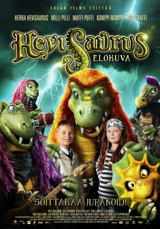

#12007 HeavySaurus - Ein rockiges Steinzeit-Abenteuer
Alternativ: HeavySaurus: The Movie (Englischer Titel)
 
 IMDB-Wertung: 5.0 / 10
IMDB-Wertung: 5.0 / 10  Metascore: 0
Metascore: 0 
Heavysaurs is a partly animated live action family adventure about two kids who find five funny dinosaur creatures that love to eat and play rock music. When the creatures are taken into captivity, their rescue takes the kids on an exciting adventure full of challenges and surprises.
Jahr: 2015
Dauer: 80 Minuten
FSK: 0
Land: Finnland Studio: Lighthouse Home EntertainmentTonspuren:
Untertitel:
Auflösung: 1080p (1920x800) Größe: 3778 MB
Genre: Musik, Fantasy, Familie
Regisseur: Pekka Karjalainen
Drehbuch: Veli-Pekka Hänninen, Antero Arjatsalo, Heikki Salo, Pekka Karjalainen
Soundtrack: Pasi Heikkilä, Nino Laurenne
Darsteller:
- Miila Virtanen als Milli Pilli / Yöllinen kulkija
- Kari Hietalahti als Iivari
- Milo Snellman als Toni
- Salli Siivonen als Suvi
- Olavi Tikka als Herra Hevisaurus / Yöllinen kulkija
- Jonas Saari als Riffi Raffi / Yöllinen kulkija
- Janne Mirala als Muffi Puffi / Yöllinen kulkija
- Antti Heikkinen als Komppi Momppi / Yöllinen kulkija
- Taneli Mäkelä als Maxim
- Timo Kahilainen als Mökö
- Jan-Peter Nyquist als Lökö
- Eija Vilpas als Noita
- Sanna Stellan als Suvin äiti
- Toni Wahlström als Suvin isä
- Kaisa Hela als Tonin äiti
- Heikki Hela als Tonin isä
- Allan Tuppurainen als professori Antero Tiukkanen
- Pasi Heikkilä als Professor's assistant
- Nino Laurenne als Professor's assistant
- Veli-Pekka Hänninen als Police officer
- Sari Nuolikoski als Police officer
- Matti Siitonen als Minister
- Jarmo Paabo als Minister's bodyguard
- Timo Kotipelto als Foreman
- Jari Mäenpää als Worker
- Teemu Mäntysaari als Worker
- Nina Laurio als Sauvakävelijä
- Hanna Pakarinen als Cashier at music store
- Kimmo Taavila als Guard
- Veeti Kallio als Riffi Raffi
- Sam Huber als Komppi Momppi
- Tatu Siivonen als Police officer
Datei: X:\Kinder Filme (G-M)\HeavySaurus - Ein rockiges Steinzeit-Abenteuer (2015, FSK0, 1920x800).mkv seit 04.11.2019
Festplatte: Kinder-Filme+Trick
 Es gibt insgesamt 84 Filme in der Gruppe 'Kinder Filme (G-M)'
Es gibt insgesamt 84 Filme in der Gruppe 'Kinder Filme (G-M)'